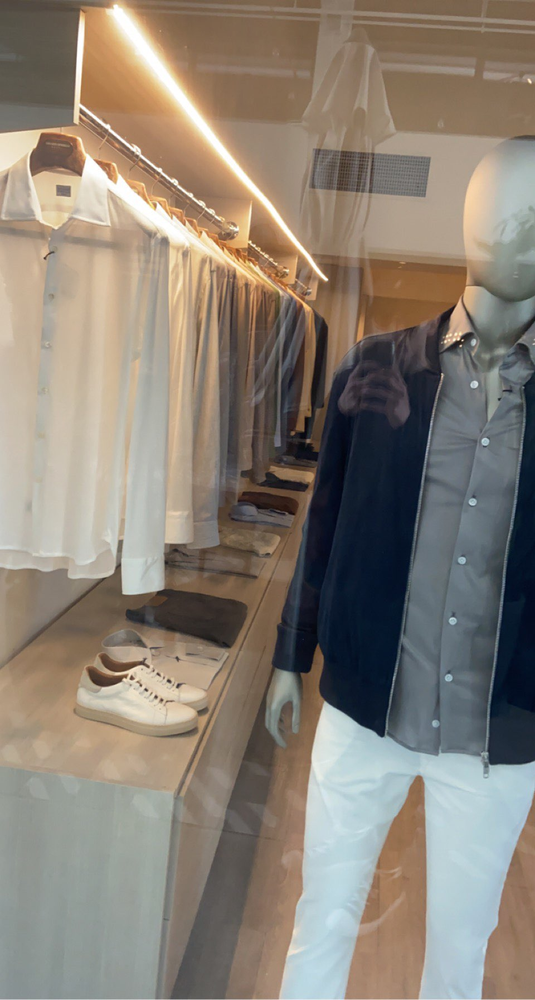

city jaunt.
Today was one of the coolest days I've had in a while. I ventured down to Miami's Design District to see high end fashion up close and in person.
I mainly went down there to see my favorite fashion brand's stores (Rick Owens, Celine, and Chrome Hearts) but I also had quite the experience doing everything else there.
It all started this morning when I was in my car about to go to school. I was talking to a friend about how I was bummed out about a number of things and going to school would make matters worse.
I wanted to clear my mind and venture out from where I live to go see life instead of repeating the same old school once again. I decided to go visit the design district to see those stores I previously mentioned to motivate me to work harder in life and to get a taste of what high end fashion is.
After making sure I was ready, I headed out of the school parking lot curious to see what lie ahead. The first thing I noticed was the horrible traffic involved getting to the city.
Not only was the time to get to my destination was increased but the pollution and littering was horrible.
It was depressing seeing the amount of cars traveling all emitting exhaust as they travel to their destination.
I'm not really an environmental guy but it really broke me seeing animals becoming accustomed to the city lifestyle as they walked across the hot asphalt and ate trash off the ground.
Anyways, I eventually made it to the district and I was blown away by the area and how different it was compared to home. Now granted, this was regarded as a really artistic and fancy place so naturally the area was inevitably going to be nice but I could tell it was something special.
I found some parking and made my way out of the car to get a closer look at some stores and artwork. Unfortunately, it was early in the morning (9am) so all of the stores were closed but their windows had outfits and clothes for the passer by to see.
All of the stores here are much different than your average retail experience. These high end stores were not just a store, but also a work of art. There were no signs and extra things that scream "buy me!" near the shop.
There was one "store" that simply had a table and four chairs on the inside with one knocked over. Some of these stores made me question why these companies would even rent this space out to not display anything or be minimal but I soon realized that this was the aesthetic of the whole area and modern fashion.
I visited a coffee shop during my stay and expected the prices to be ridiculously high but to my surprise, it wasn't terrible. I had a cup of coffee for only three (US) dollars and the people inside were nice to me.
Even though the coffee shop was next to these stores I mentioned, it still had that same artsy feel.
All of these stores acted like the owner's canvas making each building unique but also felt similar due to the artistic nature of each building. Nothing felt out of place here and even the bright and colorful nature of the coffee shop next to the eerie, sinister look of Rick Owens looked normal.
Bellow are two close up photos I took and I'm now realizing I should have taken more but I'm more of a memory guy than a photo one.

